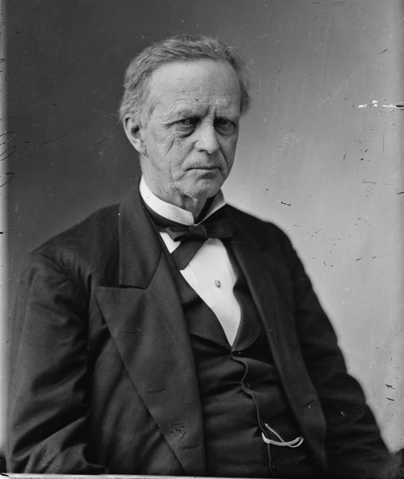

Directions: Read the background and the record, then answer the questions.

Background. In April 1866 Congress passed the Civil Rights Act over President Johnson's veto. Senator Lyman Trumbull of Illinois wrote the bill as Congress's answer to the Black Codes. The record below is Section 1 of the act, as recorded in the audited TPSP bank record civil-rights-act-1866 (U.S. Congress, Civil Rights Act of 1866, 1866; Facing History & Ourselves; 14 Stat. 27-30). The ellipsis at the end stands in the bank record and is preserved here.
The record. An Act to protect all Persons in the United States in their Civil Rights, and furnish the Means of their Vindication. Be it enacted by the Senate and House of Representatives of the United States of America in Congress assembled, That all persons born in the United States and not subject to any foreign power, excluding Indians not taxed, are hereby declared to be citizens of the United States; and such citizens, of every race and color, without regard to any previous condition of slavery or involuntary servitude, except as a punishment for crime whereof the party shall have been duly convicted, shall have the same right, in every State and Territory in the United States, to make and enforce contracts, to sue, be parties, and give evidence, to inherit, purchase, lease, sell, hold, and convey real and personal property, and to full and equal benefit of all laws and proceedings for the security of person and property, as is enjoyed by white citizens, and shall be subject to like punishment, pains, and penalties, and to none other, any law, statute, ordinance, regulation, or custom, to the contrary notwithstanding [...]
1. State how the record defines a citizen of the United States.
2. List four rights the record guarantees citizens of every race, in the same terms the record uses for white citizens.
3. Congress claimed the power to pass this act from Section 2 of the Thirteenth Amendment. State what Section 2 says, word for word as the lesson gives it, and state what Section 1 had abolished.
4. Supporters of the act doubted it even after the override. State two doubts the reading names, and state what Congress prepared by December 1866 in answer to them.
1. State the citizenship definition. All persons born in the United States and not subject to any foreign power, excluding Indians not taxed, are declared citizens of the United States. The definition runs on birth, not on race or on any previous condition of slavery. (Blueprint 4)
2. List four guaranteed rights. Any four of: the same right to make and enforce contracts; to sue, be parties, and give evidence; to inherit, purchase, lease, sell, hold, and convey real and personal property; and to full and equal benefit of all laws and proceedings for the security of person and property, as is enjoyed by white citizens, with like punishment and none other. (Blueprint 4)
3. State Section 2 and Section 1 of the amendment. Section 2 reads: Congress shall have power to enforce this article by appropriate legislation. Section 1 had abolished slavery and involuntary servitude everywhere in the United States, except as a punishment for crime whereof the party shall have been duly convicted. (Blueprint 3)
4. State the two doubts and the prepared answer. First, lawyers doubted whether Section 2 truly authorized Congress to define citizenship and strike down state law, and an unsympathetic court might hold that it did not. Second, a president hostile to the statute would enforce it feebly, and the legislatures that passed the Black Codes had not surrendered. By December 1866 Congress had drafted a new amendment to write citizenship and equal protection into the Constitution itself. (Blueprint 3 and 4)
Teacher note. This check is formative. Question 3 is the entry diagnostic: students who cannot connect the act to Section 2 have the statute without its claimed authority, and the reteach is section B of the reading. Question 4 previews the next lesson's amendment directly.